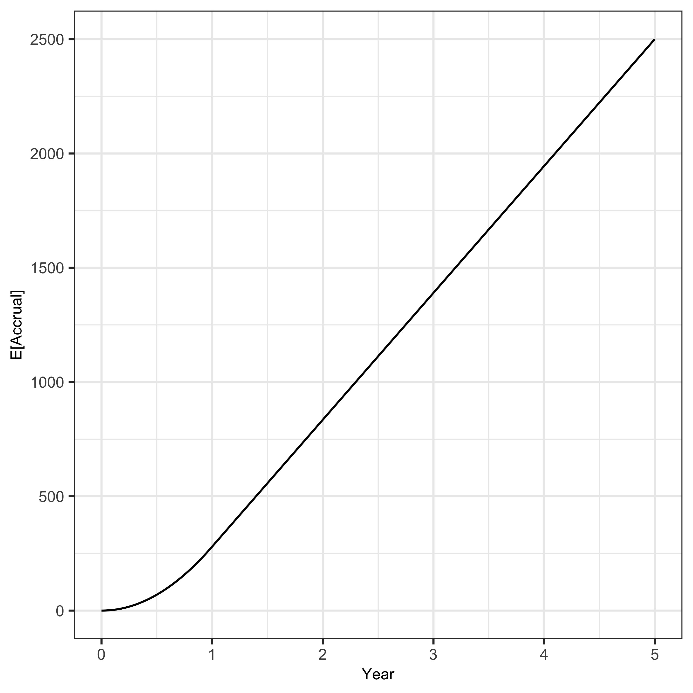

Simulation settings
Baseline response
The assumed baseline probability/log-odds of response by silo and site of infection are detailed in the table below.
| Silo | Joint | Pr(trt success) | log-odds |
|---|---|---|---|
| early | knee | 0.65 | 0.62 |
| early | hip | 0.75 | 1.10 |
| late | knee | 0.55 | 0.20 |
| late | hip | 0.6 | 0.41 |
| chronic | knee | 0.6 | 0.41 |
| chronic | hip | 0.65 | 0.62 |
Accrual
Accrual is assumed to follow a non-homogeneous Poisson process event times with ramp up over the first 12 months of enrolment and then enrolment of around 1.5 per day.
Code
# events per day
lambda = 1.52
# ramp up over 12 months
rho = function(t) pmin(t/360, 1)
d_fig <- data.table(
t = 0:(5 * 365),
# expected number enrolled
n = c(0, nhpp.mean(lambda, rho, t1 = 5 * 365, num.points = 5 * 365))
)
ggplot(d_fig, aes(x = t/365, y = n)) +
geom_line() +
scale_x_continuous("Year") +
scale_y_continuous("E[Accrual]", breaks = seq(0, 2500, by = 500))

Domain non-membership effects
We assume a small zero effects for not being randomised to a domain for all domains.
Missingness
Missingness is not implemented.
Non-differential follow-up
To avoid artifacts associated with non-differential follow-up (e.g. early vs late deaths), participants will be included in the analyses only when they reach the primary endpoints (12 months) irrespective of whether they experienced treatment failure before that time.
Simulation scenarios
We consider a range of simulation settings:
- Null scenario - no effect of any randomised treatment in any cell (OR = 1) for all domains and silos
- All effective - all randomised treatments in all cells effective (OR = 1.5) for all domains and silos
- Single effective - single cell effective (OR = 1.5) for single domain and silo
- Single harmful - single cell harmful (OR = 1/1.5) for single domain and silo